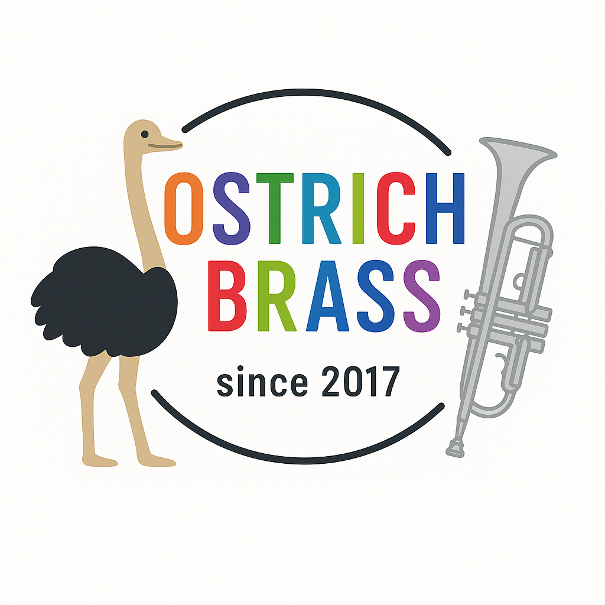
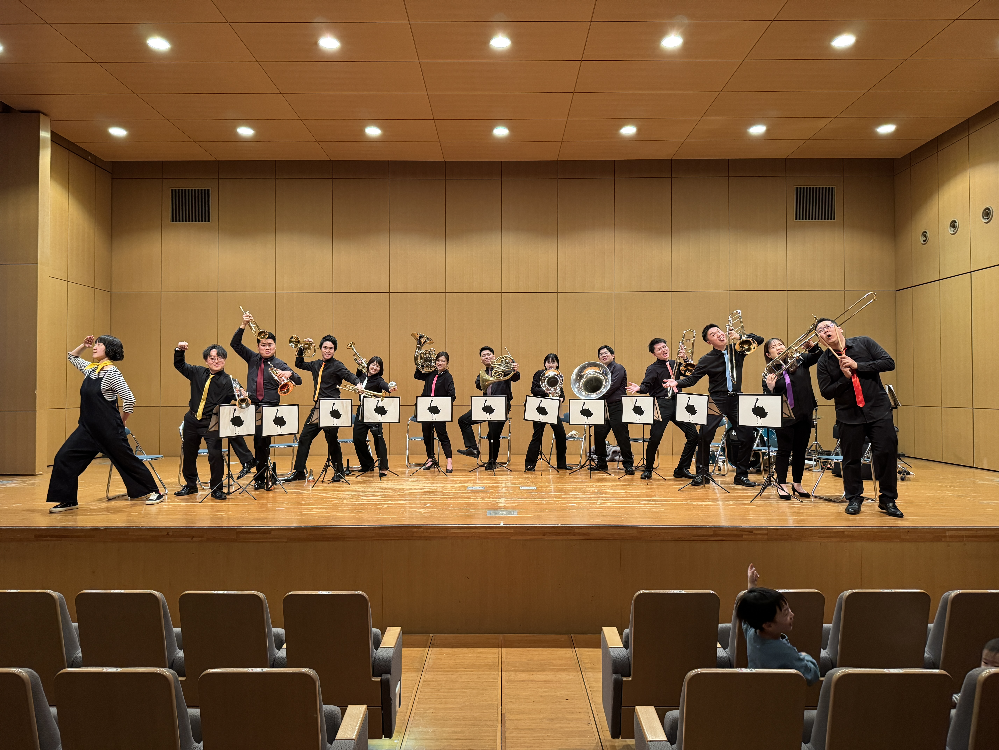
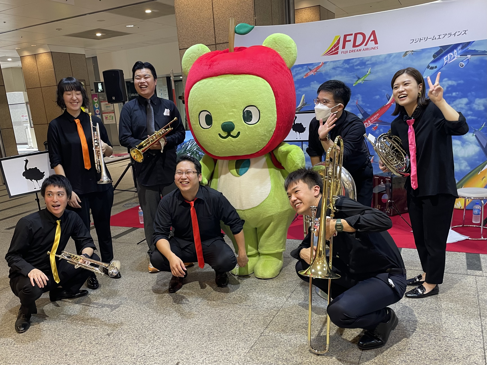
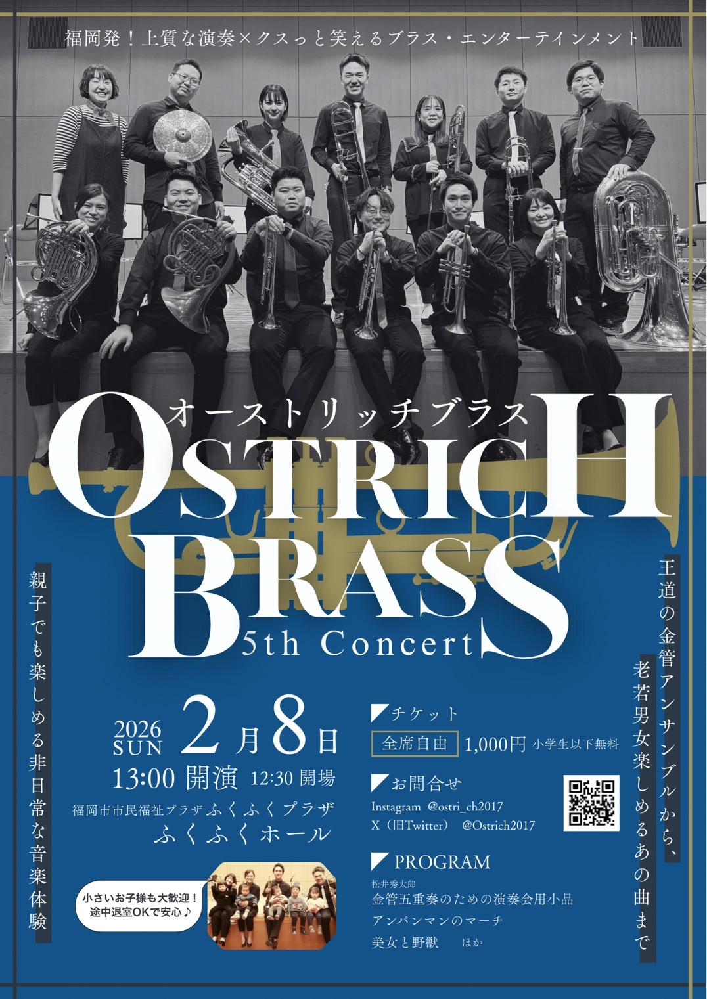
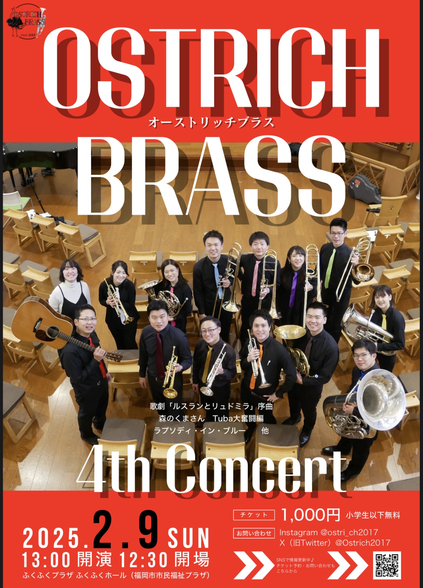
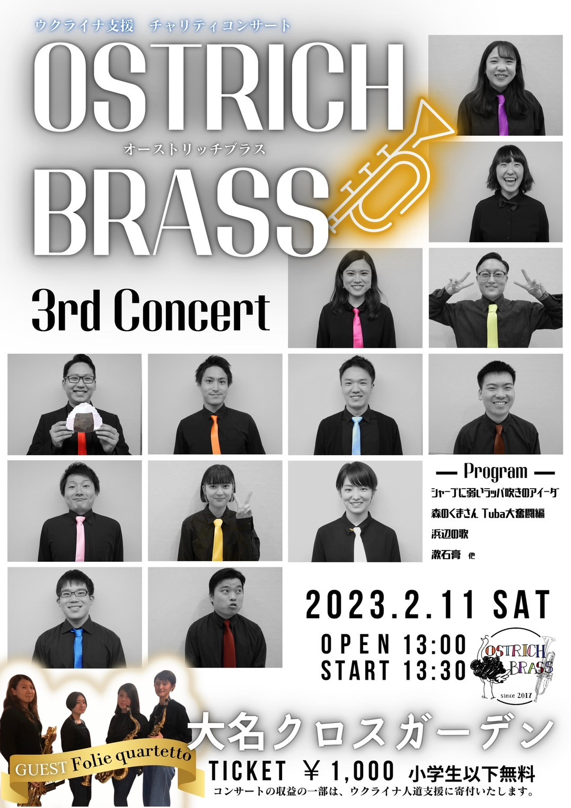
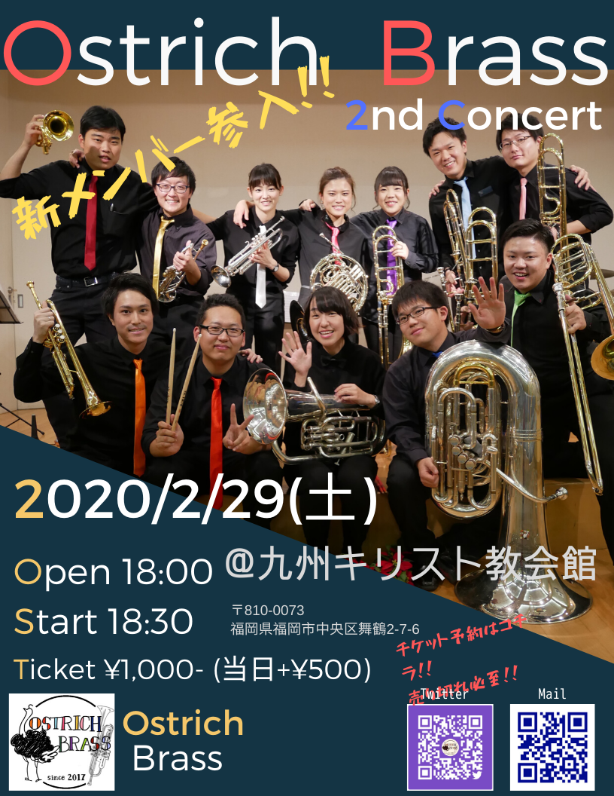
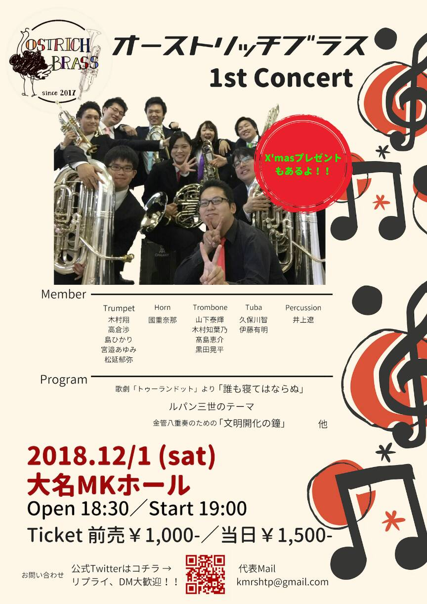

ホームページをオープンしました
オーストリッチブラスの公式ホームページをオープンしました。演奏会情報・動画・演奏依頼など、ぜひご覧ください！
第5回定期演奏会（2026.2.8）にたくさんのご来場ありがとうございました！ 4thコンサートの録画をYouTubeで公開中 →
金管アンサンブル × エンターテイメント
オーストリッチブラス
2017年結成。クラシックからジャズ、ロック、フュージョン、ポップスまで、
金管楽器の響きで届ける福岡の音楽集団。


オーストリッチブラスの公式ホームページをオープンしました。演奏会情報・動画・演奏依頼など、ぜひご覧ください！
オーストリッチブラスは、2017年に福岡で結成した金管アンサンブルです。トランペット・ホルン・トロンボーン・ユーフォニアム・チューバ・パーカッション・ドラムス・アコースティックギターなど多彩な楽器によるサウンドで、クラシックからジャズ、ロック、フュージョン、ポップスまで幅広いレパートリーをお届けします。
「上質な演奏×クスっと笑えるエンターテインメント」をモットーに、定期演奏会のほか、地域のイベントや式典など様々な場所で演奏活動を行っています。
演奏のご依頼・お問い合わせはお気軽にどうぞ。コンサートから地域のお祭りまで、あなたの大切な場面を音楽で彩ります。

結成以来、定期演奏会をはじめ地域のイベントやミニコンサートなど、さまざまなステージで演奏を続けています。



ウクライナ支援チャリティコンサート


定期演奏会や各種イベントの演奏動画をYouTubeで公開しています。
2025年2月9日 ふくふくホール
2023年2月11日 大名クロスガーデン
2020年2月29日 九州キリスト教会館
2018年12月1日 大名MKホール
2025年12月公開
2025年9月23日
2025年9月23日
2025年5月3日
2024年2月10日
2022年6月11日
日々の練習風景や活動の様子はInstagramで随時更新しています。


コンサート・式典・地域イベント・学校行事など、様々なシーンでの演奏が可能です。お気軽にご相談ください。
ゲスト出演、ジョイントコンサートなど
卒業式、入学式、祝賀会など
お祭り、地域イベント、パーティーなど